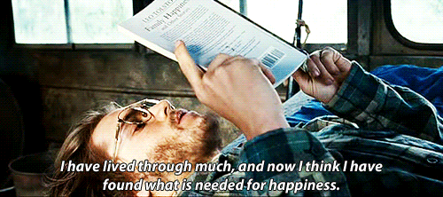

- All Quite Along The Western Front
- Into The Wild 

All Quiet on the Western Front" hits you like a punch to the gut and changes how you see everything. It destroys any romantic ideas about war and heroism, showing instead the horrific waste of young lives for causes they barely understand. The film makes you deeply grateful for peace and safety you normally take for granted. It develops real empathy for anyone who's suffered trauma, especially veterans carrying invisible wounds. You start questioning leaders who send others to die while staying safe themselves. Many viewers say it fundamentally shifts their perspective on what matters in life. The brutal honesty about war's cost makes you more thoughtful about current conflicts and more appreciative of ordinary moments with family and friends. It's not just entertainment - it's an emotional education that stays with you, making you more compassionate and more skeptical of those who glorify violence. The film doesn't lecture you about war being bad - it shows you through raw, unforgettable images that burn into your memory. You'll find yourself thinking differently about news reports, political speeches, and the true price of conflict long after the credits roll.
"Into the Wild" makes you question everything about how you're living your life. It challenges whether you're chasing money, status, and possessions that don't actually bring happiness, or if you're living authentically according to your own values. The film inspires many people to take risks, travel more, and break free from societal expectations about success. You start questioning whether your career path, relationships, and daily routines are truly fulfilling or just what's expected of you. McCandless's radical rejection of materialism makes you examine your own attachment to stuff and whether it's holding you back. At the same time, it serves as a powerful reminder about the importance of human connections. Many viewers realize they've been taking family and friends for granted, seeing how McCandless's isolation ultimately became his downfall. The film makes you want to strengthen relationships while also living more adventurously. It's both inspiring and sobering - encouraging you to live boldly and authentically while showing the dangers of extreme independence. Most people walk away wanting to find better balance between security and adventure, between following dreams and maintaining connections. The film often triggers major life changes, from career switches to relationship repairs to simply spending more time in nature.